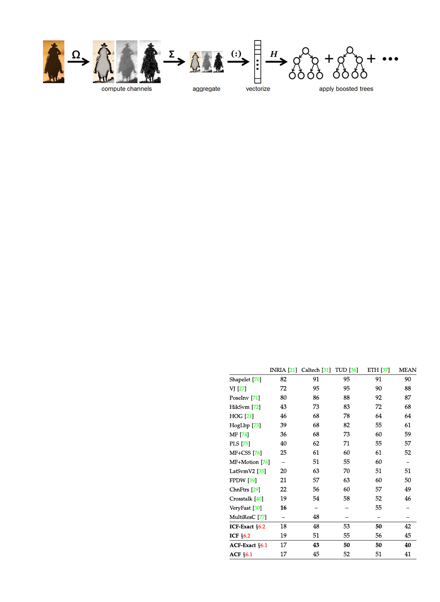
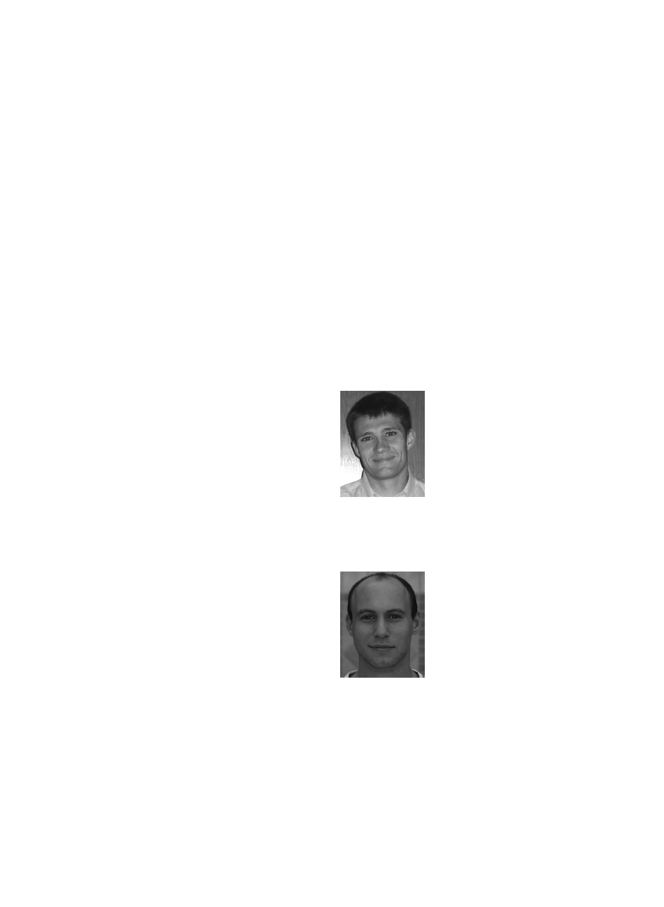

1532
IEEE TRANSACTIONS ON PATTERN ANALYSIS AND MACHINE INTELLIGENCE, VOL. 36, NO. 8, AUGUST 2014
Fast Feature Pyramids for Object Detection
Piotr Dolla�r, Ron Appel, Serge Belongie, and Pietro Perona
Summary—Multiresolution image features may be approximated via extrapolation from nearby scales, rather than being computed explicitly. This fundamental insight allows us to design object detection algorithms that are as accurate, and considerably faster, than the stateoftheart. The computational bottleneck of many modern detectors is the computation of features at every scale of a finelysampled image pyramid. Our key insight is that one may compute finely sampled feature pyramids at a fraction of the cost, without sacrificing performance: for a broad family of features we find that features computed at octavespaced scale intervals are sufficient to approximate features on a finelysampled pyramid. Extrapolation is inexpensive as compared to direct feature computation. As a result, our approximation yields considerable speedups with negligible loss in detection accuracy. We modify three diverse visual recognition systems to use fast feature pyramids and show results on both pedestrian detection (measured on the Caltech, INRIA, TUDBrussels and ETH data sets) and general object detection (measured on the PASCAL VOC). The approach is general and is widely applicable to vision algorithms requiring finegrained multiscale analysis. Our approximation is valid for images with broad spectra (most natural images) and fails for images with narrow bandpass spectra (e.g., periodic textures).
Index Terms—Visual features, object detection, image pyramids, pedestrian detection, natural image statistics, real-time systems
Ç
1 INTRODUCTION
MULTI-RESOLUTION multi-orientation decompositions
are one of the foundational techniques of image anal-
ysis. The idea of analyzing image structure separately at every scale and orientation originated from a number of sources: measurements of the physiology of mammalian visual systems [1], [2], [3], principled reasoning about the statistics and coding of visual information [4], [5], [6], [7] (Gabors, DOGs, and jets), harmonic analysis [8], [9] (wavelets), and signal processing [9], [10] (multirate filtering). Such representations have proven effective for visual processing tasks such as denoising [11], image enhancement [12], texture analysis [13], stereoscopic correspondence [14], motion flow [15], [16], attention [17], boundary detection [18] and recognition [19], [20], [21].
It has become clear that such representations are best at extracting visual information when they are overcomplete, i.e., when one oversamples scale, orientation and other kernel properties. This was suggested by the architecture of the primate visual system [22], where striate cortical cells (roughly equivalent to a wavelet expansion of an image) outnumber retinal ganglion cells (a representation close to image pixels) by a factor ranging from 102 to 103. Empirical studies in computer vision provide increasing evidence in favor of overcomplete representations [21], [23], [24], [25], [26]. Most likely the robustness of these representations
� P. Dolla�r is with the Interactive Visual Media Group at Microsoft Research, One Microsoft Way, Redmond, WA 98052.
Email: pdollar@microsoft.com. � R. Appel and P. Perona are with the Department of Electrical Engineering, California Institute of Technology, Pasadena, CA.
Email: {appel, perona}@caltech.edu. � S. Belongie is with Cornell NYC Tech and the Cornell Computer
Science Department. Manuscript received 14 Feb. 2013; revised 15 Dec. 2013; accepted 8 Jan. 2014. Date of publication 15 Jan. 2014; date of current version 10 July 2014. Recommended for acceptance by D. Forsyth. For information on obtaining reprints of this article, please send email to: reprints@ieee.org, and reference the Digital Object Identifier below. Digital Object Identifier no. 10.1109/TPAMI.2014.2300479
with respect to changes in viewpoint, lighting, and image deformations is a contributing factor to their superior performance.
To understand the value of richer representations, it is instructive to examine the reasons behind the breathtaking progress in visual category detection during the past ten years. Take, for instance, pedestrian detection. Since the groundbreaking work of Viola and Jones (VJ) [27], [28], false positive rates have decreased two orders of magnitude. At 80 percent detection rate on the INRIA pedestrian data set [21], VJ outputs over 10 false positives per image (FPPI), HOG [21] outputs 1 FPPI, and more recent methods [29], [30] output well under 0.1 FPPI (data from [31], [32]). In comparing the different detection schemes one notices the representations at the front end are progressively enriched (e.g., more channels, finer scale sampling, enhanced normalization schemes); this has helped fuel the dramatic improvements in detection accuracy witnessed over the course of the last decade.
Unfortunately, improved detection accuracy has been accompanied by increased computational costs. The VJ detector ran at 15 frames per second (fps) over a decade ago, on the other hand, most recent detectors require multiple seconds to process a single image as they compute richer image representations [31]. This has practical importance: in many applications of visual recognition, such as robotics, human computer interaction, automotive safety, and mobile devices, fast detection rates and low computational requirements are of the essence.
Thus, while increasing the redundancy of the representation offers improved detection and falsealarm rates, it is paid for by increased computational costs. Is this a necessary tradeoff? In this work we offer the hopedfor but surprising answer: no.
We demonstrate how to compute richer representations without paying a large computational price. How is this possible? The key insight is that natural images have fractal statistics [7], [33], [34] that we can exploit to reliably predict
01628828 ß 2014 IEEE. Personal use is permitted, but republication/redistribution requires IEEE permission. See http://www.ieee.org/publications_standards/publications/rights/index.html for more information.

DOLLA�R ET AL.: FAST FEATURE PYRAMIDS FOR OBJECT DETECTION
1533
image structure across scales. Our analysis and experiments show that this makes it possible to inexpensively estimate features at a dense set of scales by extrapolating computations carried out expensively, but infrequently, at a coarsely sampled set of scales.
Our insight leads to considerably decreased runtimes for stateoftheart object detectors that rely on rich representations, including histograms of gradients [21], with negligible impact on their detection rates. We demonstrate the effectiveness of our proposed fast feature pyramids with three distinct detection frameworks including integral channel features (ICF) [29], aggregate channel features (a novel variant of integral channel features), and deformable part models (DPM) [35]. We show results for both pedestrian detection (measured on the Caltech [31], INRIA [21], TUDBrussels [36] and ETH [37] data sets) and general object detection (measured on the PASCAL VOC [38]). Demonstrated speedups are significant and impact on accuracy is relatively minor.
Building on our work on fast feature pyramids (first presented in [39]), a number of systems show stateoftheart accuracy while running at frame rate on 640 Â 480 images. Aggregate channel features, described in this paper, operate at over 30 fps while achieving top results on pedestrian detection. Crosstalk cascades [40] use fast feature pyramids and couple detector evaluations of nearby windows to achieve speeds of 3565 fps. Benenson et al. [30] implemented fast feature pyramids on a GPU, and with additional innovations achieved detection rates of over 100 fps. In this work we examine and analyze feature scaling and its effect on object detection in far more detail than in our previous work [39].
The remainder of this paper is organized as follows. We review related work in Section 2. In Section 3 we show that it is possible to create high fidelity approximations of multiscale gradient histograms using gradients computed at a single scale. In Section 4 we generalize this finding to a broad family of feature types. We describe our efficient scheme for computing finely sampled feature pyramids in Section 5. In Section 6 we show applications of fast feature pyramids to object detection, resulting in considerable speedups with minor loss in accuracy. We conclude in Section 7.
2 RELATED WORK
Significant research has been devoted to scale space theory [41], including real time implementations of octave and halfoctave image pyramids [42], [43]. Sparse image pyramids often suffice for certain approximations, e.g., [42] shows how to recover a disk’s characteristic scale using halfoctave pyramids. Although only loosely related, these ideas provide the intuition that finely sampled feature pyramids can perhaps be approximated.
Fast object detection has been of considerable interest in the community. Notable recent efforts for increasing detection speed include work by Felzenszwalb et al. [44] and Pedersoli et al. [45] on cascaded and coarsetofine deformable part models, respectively, Lampert et al.’s [46] application of branch and bound search for detection, and Doll�ar et al.’s work on crosstalk cascades [40]. Cascades [27], [47],
[48], [49], [50], coarsetofine search [51], distance transforms [52], etc., all focus on optimizing classification speed given precomputed image features. Our work focuses on fast feature pyramid construction and is thus complementary to such approaches.
An effective framework for object detection is the sliding window paradigm [27], [53]. Top performing methods on pedestrian detection [31] and the PASCAL VOC [38] are based on sliding windows over multiscale feature pyramids [21], [29], [35]; fast feature pyramids are well suited for such sliding window detectors. Alternative detection paradigms have been proposed [54], [55], [56], [57], [58], [59]. Although a full review is outside the scope of this work, the approximations we propose could potentially be applicable to such schemes as well.
As mentioned, a number of stateoftheart detectors have recently been introduced that exploit our fast feature pyramid construction to operate at frame rate including [40] and [30]. Alternatively, parallel implementation using GPUs [60], [61], [62] can achieve fast detection while using rich representations but at the cost of added complexity and hardware requirements. Zhu et al. [63] proposed fast computation of gradient histograms using integral histograms [64]; the proposed system was real time for singlescale detection only. In scenarios such as automotive applications, real time systems have also been demonstrated [65], [66]. The insights outlined in this paper allow for real time multiscale detection in general, unconstrained settings.
3 MULTISCALE GRADIENT HISTOGRAMS
We begin by exploring a simple question: given image gradients computed at one scale, is it possible to approximate gradient histograms at a nearby scale solely from the computed gradients? If so, then we can avoid computing gradients over a finely sampled image pyramid. Intuitively, one would expect this to be possible, as significant image structure is preserved when an image is resampled. We begin with an indepth look at a simple form of gradient histograms and develop a more general theory in Section 4.
A gradient histogram measures the distribution of the gradient angles within an image. Let Iðx; yÞ denote an m  n discrete signal, and @I=@x and @I=@y denote the discrete derivatives of I (typically 1D centered first differences are used). Gradient magnitude and orientation are darectnaneÀd@@Iy
by: Mði; ði; jÞ=
@I @x
ði; jÞ2Á ¼
@I @x
jÞ . To
ði; jÞ2 þ
@I @y
ði; jÞ2
compute the
and Oði; jÞ ¼ gradient histo
gram of an image, each pixel casts a vote, weighted by its gradient magnitude, for the bin corresponding to its gradient orientation. After the orientation O is quantized into Q bins so that Oði; jPÞ 2 f1; Qg, the qth bin of the histogram is defined by: hq ¼ i;j Mði; jÞ1½Oði; jÞ ¼ q, where 1 is the indicator function. In the following everything that holds for global histograms also applies to local histograms (defined identically except for the range of the indices i and j).
3.1 Gradient Histograms in Upsampled Images Intuitively the information content of an upsampled image is similar to that of the original, lowerresolution image (upsampling does not create new structure). Assume I is a

1534
IEEE TRANSACTIONS ON PATTERN ANALYSIS AND MACHINE INTELLIGENCE, VOL. 36, NO. 8, AUGUST 2014
Fig. 1. Behavior of gradient histograms in images resampled by a factor of two. (a) Upsampling gradients. Given images I and I0 where I0 denotes I upsampled by two, and corresponding gradient magnitude images M and M0, the ratio SM=SM0 should be approximately 2. The middle/bottom panels show the distribution of this ratio for gradients at fixed orientation over pedestrian/natural images. In both cases the mean m % 2, as expected, and the variance is relatively small. (b) Downsampling gradients. Given images I and I0 where I0 denotes I downsampled by two, the ratio SM=SM0 % 0:34, not 0:5 as might be expected from (a) as downsampling results in loss of high frequency content. (c) Downsampling normalized gradients. Given normalized gradient magnitude images Me and Me 0, the ratio SMe =SMe 0 % 0:27. Instead of trying to derive analytical expressions governing the scaling properties of various feature types under different resampling factors, in Section 4 we describe a general law governing feature scaling.
continuous signal, and let I0 denote I upsampled by a factor of k: I0ðx; yÞ � Iðx=k; y=kÞ. Using the definition of a derivative, one can for
@I0 @y
, which
show
that
@I0 @x
ði; jÞ
simply states the
¼
1 k @I @x
ði=k;
j=kÞ,
and
likewise
intuitive fact that the rate of
change in the upsampled image is k times slower the rate of change in the original image. While not exact, the above also holds approximately for interpolated discrete signals. Let M0ði; jÞ
%
1 k
M ðdi=ke;
dj=keÞ
denote
the gradient
magni-
tude in an upsampled discrete image. Then:
X kn
i¼1
X km
j¼1
M 0 ði;
jÞ % X kn
i¼1
X km
j¼1
1 k M ðdi=ke;
dj=keÞ
¼ k2 Xn
i¼1
X m
j¼1
1 k M ði;
jÞ ¼ k Xn
i¼1
X m
j¼1
M ði;
jÞ:
(1)
Thus, the sum of gradient magnitudes in the original and
@uA@Iyp0nðsgia;lmjeÞsp%lseh@@dxIoðuiiml=dka;gaje=lsksohÞ�ob@@ueIylðdim=bkoe;sjrt=leyklaÞ.tpeTrdehsbeeyrrevafeobdroeu,stianacccfeaocr@@tdIxo0irðniog; fjÞtk�o.
the definition of gradient histograms, we expect the relationship between hq (computed over I) and hq0 (computed over I0) to be: h0q % khq. This allows us to approximate gradient histograms in an upsampled image using gradients computed at the original scale.
Experiments. One may verify experimentally that in images of natural scenes, upsampled using bilinear interpolation, the approximation hq0 % khq is reasonable. We use two sets of images for these experiments, one class specific and one class independent. First, we use the 1;237 cropped pedestrian images from the INRIA pedestrians training data set [21]. Each image is 128 Â 64 and contains a
pedestrian approximately 96 pixels tall. The second image set contains 128 Â 64 windows cropped at random positions from the 1;218 images in the INRIA negative training set. We sample 5,000 windows but exclude nearly uniform windows, i.e., those with average gradient magnitude under 0:01, resulting in 4,280 images. We refer to the two sets as ‘pedestrian images’ and ‘natural images,’ although the latter is biased toward scenes that may (but do not) contain pedestrians.
In order to measure the fidelity of this approximation, we define the ratio rq ¼ hq0 =hq and quantize orientation into Q ¼ 6 bins. Fig. 1a shows the distribution of rq for one bin on the 1;237 pedestrian and 4; 280 natural images given an upsampling of k ¼ 2 (results for other bins were similar). In both cases the mean is m % 2, as expected, and the variance is relatively small, meaning the approximation is unbiased and reasonable.
Thus, although individual gradients may change, gradient histograms in an upsampled and original image will be related by a multiplicative constant roughly equal to the scale change between them. We examine gradient histograms in downsampled images next.
3.2 Gradient Histograms in Downsampled Images While the information content of an upsampled image is roughly the same as that of the original image, information is typically lost during downsampling. However, we find that the information loss is consistent and the resulting approximation takes on a similarly simple form.
If I contains little high frequency energy, then the approximation h0q % khq derived in Section 3.1 should apply. In general, however, downsampling results in loss of high

DOLLA�R ET AL.: FAST FEATURE PYRAMIDS FOR OBJECT DETECTION
1535
Fig. 2. Approximating gradient histograms in images resampled by a factor of two. For each image set, we take the original image (green border) and generate an upsampled (blue) and downsampled (orange) version. At each scale we compute a gradient histogram with eight bins, multiplying each bin by 0:5 and 1=0:34 in the upsampled and downsampled histogram, respectively. Assuming the approximations from Section 3 hold, the three normalized gradient histograms should be roughly equal (the blue, green, and orange bars should have the same height at each orientation). For the first four cases, the approximations are fairly accurate. In the last two cases, showing highly structured Brodatz textures with significant high frequency content, the downsampling approximation fails. The first four images are representative, the last two are carefully selected to demonstrate images with atypical statistics.
frequency content which can lead to measured gradients undershooting the extrapolated gradients. Let I0 now denote I downsampled by a factor of k. We expect that hq (computed over I) and h0q (computed over I0) will satisfy h0q hq=k. The question we seek to answer here is whether the information loss is consistent.
Experiments. As before, define rq ¼ h0q=hq. In Fig. 1b we show the distribution of rq for a single bin on the pedestrian and natural images given a downsampling factor of k ¼ 2. Observe that the information loss is consistent: rq is normally distributed around m % 0:34 < 0:5 for natural images (and similarly m % 0:33 for pedestrians). This implies that hq0 % mhq could serve as a reasonable approximation for gradient histograms in images downsampled by k ¼ 2.
In other words, similarly to upsampling, gradient histograms computed over original and half resolution images tend to differ by a multiplicative constant (although the constant is not the inverse of the sampling factor). In Fig. 2 we show the quality of the above approximations on example images. The agreement between predictions and observations is accurate for typical images (but fails for images with atypical statistics).
3.3 Histograms of Normalized Gradients Suppose we replaced the gradient magnitude M by the normalized gradient magnitude Me defined as Me ði; jÞ ¼ Mði; jÞ=ðMði; jÞ þ 0:005Þ, where M is the average gradient magnitude in each 11 Â 11 image patch (computed by convolving M with an L1 normalized 11 Â 11 triangle filter). Using the normalized gradient Me gives improved results in
the context of object detection (see Section 6). Observe that we have now introduced an additional nonlinearity to the gradient computation; do the previous results for gradient histograms still hold if we use Me instead of M?
In Fig. 1c we plot the distribution of rq ¼ hq0 =hq for histograms of normalized gradients given a downsampling factor of k ¼ 2. As with the original gradient histograms, the distributions of rq are normally distributed and have similar means for pedestrian and natural images (m % 0:26 and m % 0:27, respectively). Observe, however, that the expected value of rq for normalized gradient histograms is quite different than for the original histograms (Fig. 1b).
Deriving analytical expressions governing the scaling properties of progressively more complex feature types would be difficult or even impossible. Instead, in Section 4 we describe a general law governing feature scaling.
4 STATISTICS OF MULTISCALE FEATURES
To understand more generally how features behave in resampled images, we turn to the study of natural image statistics [7], [33]. The analysis below provides a deep understanding of the behavior of multiscale features. The practical result is a simple yet powerful approach for predicting the behavior of gradients and other lowlevel features in resampled images without resorting to analytical derivations that may be difficult except under the simplest conditions.
We begin by defining a broad family of features. Let V be any lowlevel shift invariant function that takes an image I and creates a new channel image C ¼ VðIÞ where a channel C is a perpixel feature map such that output pixels in C are
1536
IEEE TRANSACTIONS ON PATTERN ANALYSIS AND MACHINE INTELLIGENCE, VOL. 36, NO. 8, AUGUST 2014
computed from corresponding patches of input pixels in I (thus preserving overall image layout). C may be downsampled relative to I and may contain multiple layers k. We define a feature fVPðIÞ as a weighted sum of the channel C ¼ VðIÞ: fVðIÞ ¼ ijk wijkCði; j; kÞ. Numerous local and global features can be written in this form including gradient histograms, linear filters, color statistics, and others [29]. Any such lowlevel shift invariant V can be used, making this representation quite general.
Let Is denote I at scale s, where the dimensions hs  ws of Is are s times the dimensions of I. For s < 1, Is (which denotes a higher resolution version of I) typically differs from I upsampled by s, while for s < 1 an excellent approximation of Is can be obtained by downsampling I. Next, for simplicity we redefine fVðIsÞ as1
1X
fVðIsÞ � hswsk ijk Csði; j; kÞ where Cs ¼ VðIsÞ:
(2)
In other words fVðIsÞ denotes the global mean of Cs computed over locations ij and layers k. Everything in the following derivations based on global means also holds for local means (e.g., local histograms).
Our goal is to understand how fVðIsÞ behaves as a function of s for any choice of shift invariant V.
4.1 Power Law Governs Feature Scaling Ruderman and Bialek [33], [67] explored how the statistics of natural images behave as a function of the scale at which an image ensemble was captured, i.e., the visual angle corresponding to a single pixel. Let fðIÞ denote an arbitrary (scalar) image statistic and E½Á denote expectation over an ensemble of natural images. Ruderman and Bialek made the fundamental discovery that the ratio of E½fðIs1 Þ to E½fðIs2 Þ, computed over two ensembles of natural images captured at scales s1 and s2, respectively, depends only on the ratio of s1=s2 and is independent of the absolute scales s1 and s2 of the ensembles.
Ruderman and Bialek’s findings imply that E½fðIsÞ follows a power law2:
E½fðIs1 Þ=E½fðIs2 Þ ¼ ðs1=s2ÞÀ�f :
(3)
Every statistic f will have its own corresponding �f. In the context of our work, for any channel type V we can use the scalar fVðIÞ in place of fðIÞ and �V in place of �f. While Eq. (3) gives the behavior of fV w.r.t. to scale over an ensemble of images, we are interested in the behavior of fV for a single image.
1. The definition of fVðIsÞ in Eq. (2) differs from our previous definition in [39], where fðI; sÞ denoted the channel sum after resampling by 2s. The new definition and notation allow for a cleaner derivation, and the exponential scaling law becomes a more intuitive power law. 2. Let F ðsÞ ¼ E½fðIsÞ. We can rewrite the observation by saying there exists a function R such that F ðs1Þ=F ðs2Þ ¼ Rðs1=s2Þ. Applying repeatedly gives F ðs1Þ=F ð1Þ ¼ Rðs1Þ, F ð1Þ=F ðs2Þ ¼ Rð1=s2Þ, and F ðs1Þ=F ðs2Þ ¼ Rðs1=s2Þ. Therefore Rðs1=s2Þ ¼ Rðs1ÞRð1=s2Þ. Next, let R0ðsÞ ¼ RðesÞ and observe that R0ðs1 þ s2Þ ¼ R0ðs1ÞR0ðs2Þ since Rðs1s2Þ ¼ Rðs1ÞRðs2Þ. If R0 is also continuous and nonzero, then it must take the form R0ðsÞ ¼ eÀ�s for some constant � [68]. This implies RðsÞ ¼ R0ðlnðsÞÞ ¼ eÀ� lnðsÞ ¼ sÀ�. Therefore, E½fðIsÞ must follow a power law (see also Eq. (9) in [67]).
We observe that a single image can itself be considered an ensemble of image patches (smaller images). Since V is shift invariant, we can interpret fVðIÞ as computing the average of fVðIkÞ over every patch Ik of I and therefore Eq. (3) can be applied directly for a single image. We formalize this below.
We can decompose an image I into K smaller images I1 . . . IK such that I ¼ ½I1 Á Á Á IK. Given that V must be shift invariant and ignoring boundary effects gives VðIÞ ¼ Vð½I1 Á Á Á IKÞ % ½VðI1Þ Á Á Á VðIKÞ, and substituting into Eq. (2) yields fVðIÞ % SfVðIkÞ=K. However, we can consider I1 Á Á Á IK as a (small) image ensemble, and fVðIÞ % E½fVðIkÞ an expectation over that ensemble. Therefore, substituting fVðIs1 Þ % E½fVðIsk1 Þ and fVðIs2 Þ % E½fVðIsk2 Þ into Eq. (3) yields:
fVðIs1 Þ=fVðIs2 Þ ¼ ðs1=s2ÞÀ�V þ E ;
(4)
where we use E to denote the deviation from the power law for a given image. Each channel type V has its own corresponding �V, which we can determine empirically.
In Section 4.2 we show that on average Eq. (4) provides a remarkably good fit for multiple channel types and image sets (i.e., we can fit �V such that E½E % 0). Additionally, experiments in Section 4.3 indicate that the magnitude of deviation for individual images, E½E2, is reasonable and increases only gradually as a function of s1=s2.
4.2 Estimating � We perform a series of experiments to verify Eq. (4) and estimate �V for numerous channel types V. To estimate �V for a given V, we first compute:
ms
¼ 1 N X N
i¼1
fVÀIsiÁ=fVÀI1i Á;
(5)
for N images Ii and multiple values of s < 1, where Isi is obtained by downsampling I1i ¼ Ii. We use two image ensembles, one of N ¼ 1; 237 pedestrian images and one of N ¼ 4; 280 natural images (for details see Section 3.1). According to Eq. (4), ms ¼ sÀ�V þ E½E. Our goal is to fit �V accordingly and verify the fidelity of Eq. (4) for various channel types V (i.e., verify that E½E % 0).
For each V, we measure ms according to Eq. (5) across three octaves with eight scales per octave for a total of 24 measurements at s ¼ 2À81; . . . ; 2À284. Since image dimensions are rpouffiffindeffiffidtffiffioffi the nearest integer, we compute and use s0 ¼ hsws=hw, where h  w and hs  ws are the dimensions of the original and downsampled images, respectively.
In Fig. 3 we plot ms versus s0 using a loglog plot for six channel types for both the pedestrian and natural images.3 In all cases ms follows a power law with all measurements falling along a line on the loglog plots, as predicted. However, close inspection shows ms does not start exactly at 1 as expected: downsampling introduces a minor amount of blur even for small downsampling factors. We thus expect
3. Fig. 3 generalizes the results shown in Fig. 1. However, by switching from channel sums to channel means, m1=2 in Figs. 3a and 3b is 4Â larger than m in Figs. 1b and 1c, respectively.

DOLLA�R ET AL.: FAST FEATURE PYRAMIDS FOR OBJECT DETECTION
1537
Fig. 3. Power
law feature
scaling.
For each
of six channel
types
we plot
ms
¼
1 N
P fVðIsiÞ=fVðI1i Þ
for s % 2À18 ; .. .; 2À284 on a loglog
plot for both
pedes-
trian and natural image ensembles. Plots of fVðIs1 Þ=fVðIs2 Þ for 20 randomly selected pedestrian images are shown as faint gray lines. Additionally the bestfit line to ms for the natural images is shown. The resulting � and expected error jE½Ej are given in the plot legends. In all cases the ms follow a power law as predicted by Eq. (4) and are nearly identical for both pedestrian and natural images, showing the estimate of � is robust and generally applicable. The tested channels are: (a) histograms of gradients described in Section 3; (b) histograms of normalized gradients described in Section 3.3; (c) a difference of gaussian (DoG) filter (with inner and outer s of 0:7p1 and1:14ffiffi,resffiffipffiffi ectively); (d) grayscale images (with � ¼ 0 as expected); (e) pixel standard deviation computed over local 5 Â 5 neighborhoods Cði;jÞ¼ E½Iði;jÞ2ÀE½Iði;jÞ; (f) HOG [21] with 4 Â 4 spatial bins (results were averaged over HOG’s 36 channels). Code for generating such plots is available (see chnsScaling.m in Piotr’s Toolbox).
ms to have the form ms ¼ aVsÀ�V , with aV 6¼ 1 as an artifact of the interpolation. Note that aV is only necessary for estimating �V from downsampled images and is not used subsequently. To estimate aV and �V, we use a least squares fit of log2 puted
ðms0 Þ over
¼ aV0 À �V log2ðs0 natural images
Þ to the 24 (and set
measurements comaV ¼ 2aV0 ). Resulting
estimates of �V are given in plot legends in Fig. 3.
There is strong agreement between the resulting bestfit lines and the observations. In legend brackets in Fig. 3 we report expected error jE½Ej ¼ jms À aVsÀ�V j for both natural and pedestrian images averaged over s (using aV and �V estimated using natural images). For basic gradient histograms jE½Ej ¼ 0:018 for natural images and jE½Ej ¼ 0:037 for pedestrian images. Indeed, for every channel type Eq. (4) is an excellent fit to the observations ms for both image ensembles.
The derivation of Eq. (4) depends on the distribution of image statistics being stationary with respect to scale; that this holds for all channel types tested, and with nearly an identical constant for both pedestrian and natural images, shows the estimate of �V is robust and generally applicable.
ss ¼ stdev½fVðIsiÞ=fVðI1i Þ ¼ stdev½E;
(6)
where ‘stdev’ denotes the sample standard deviation (computed over N images) and E is the error associated with each image and scaling factor as defined in Eq. (4). In Section 4.2 we confirmed that Ep½Effiffi%ffiffiffi 0, our goal now is to understand how ss ¼ stdev½E % E½E2 behaves.
In Fig. 4 we plot ss as a function of s for the same channels
as in Fig.
3. In legend
brackets
we report
ss
for s ¼
1 2
for
both natural and pedestrian images; for all channels studied s1=2 < :2. In all cases ss increases gradually with increasing s and the deviation is low for small s. The expected magnitude of E varies across channels, for example histograms of normalized gradients (Fig. 4b) have lower ss than their unnormalized counterparts (Fig. 4a). The trivial grayscale channel (Fig. 4d) has ss ¼ 0 as the approximation is exact.
Observe that often ss is greater for natural images than for pedestrian images. Many of the natural images contain relatively little structure (e.g., a patch of sky), for such images fVðIÞ is small for certain V (e.g., simple gradient histograms) resulting in more variance in the ratio in Eq. (4). For HOG channels (Fig. 4f), which have additional normalization, this effect is minimized.
4.3 Deviation for Individual Images In Section 4.2 we verified that Eq. (4) holds for an ensemble of images; we now examine the magnitude of deviation from the power law for individual images. We study the effect this has in the context of object detection in Section 6.
Plots of fVðIs1 Þ=fVðIs2 Þ for randomly selected images are shown as faint gray lines in Fig. 3. The individual curves are relatively smooth and diverge only somewhat from the bestfit line. We quantify their deviation by defining ss analogously to ms in Eq. (5):
4.4 Miscellanea We conclude this section with additional observations.
Interpolation method. Varying the interpolation algorithm for image resampling does not have a major effect. In Fig. 5a, we plot m1=2 and s1=2 for normalized gradient histograms computed using nearest neighbor, bilinear, and bicubic interpolation. In all three cases both m1=2 and s1=2 remain essentially unchanged.
Window size. All preceding experiments were performed on 128 Â 64 windows. In Fig. 5b we plot the effect of varying the window size. While m1=2 remains relatively constant,

1538
IEEE TRANSACTIONS ON PATTERN ANALYSIS AND MACHINE INTELLIGENCE, VOL. 36, NO. 8, AUGUST 2014
qffiffiffiffiffiffiffiffiffiffiffi
Fig. 4. Power law deviation for individual images. For each of the six channel types described in Fig. 3 we plot ss versus s where ss ¼ E½E2 and E is the deviation from the power law for a single image as defined in Eq. (4). In brackets we report s1=2 for both natural and pedestrian images. ss increases gradually as a function of s, meaning that not only does Eq. (4) hold for an ensemble of images but also the deviation from the power law for individual images is low for small s.
s1=2 increases with decreasing window size (see also the
derivation of Eq. (4)).
Upsampling. The power law can predict features in higher resolution images but not upsampled images. In practice, though, we want to predict features in higher resolution as opposed to (smooth) upsampled images.
Robust estimation. In preceding derivations, when computing fVðIs1 Þ=fVðIs2 Þ we assumed that fVðIs2 Þ 6¼ 0. For the V’s considered this was the case after windows of near uniform intensity were excluded (see Section 3.1). Alternatively, we have found that excluding I with fVðIÞ % 0 when estimating � results in more robust estimates.
Sparse channels. For sparse channels where frequently fVðIÞ % 0, e.g., the output of a slidingwindow object detector, s will be large. Such channels may not be good candidates for the power law approximation.
Oneshot estimates. We can estimate � as described in Section 4.2 using a single image in place of an ensemble (N ¼ 1). Such estimates are noisy but not entirely unreasonable; e.g., on normalized gradient histograms (with � % 0:101) the mean of 4,280 single image estimates of � if 0:096 and the standard deviation of the estimates is 0:073.
Scale range. We expect the power law to break down at extreme scales not typically encountered under natural viewing conditions (e.g., under high magnification).
5 FAST FEATURE PYRAMIDS
We introduce a novel, efficient scheme for computing feature pyramids. First, in Section 5.1 we outline an approach for scaling feature channels. Next, in Section 5.2 we show its application to constructing feature pyramids efficiently and we analyze computational complexity in Section 5.3.
5.1 Feature Channel Scaling We propose an extension of the power law governing feature scaling introduced in Section 4 that applies directly to channel images. As before, let Is denote I captured at scale s and RðI; sÞ denote I resampled by s. Suppose we have computed C ¼ VðIÞ; can we predict the channel image Cs ¼ VðIsÞ at a new scale s using only C?
The standard approach is to compute Cs ¼ VðRðI; sÞÞ, ignoring the information contained in C ¼ VðIÞ. Instead, we propose the following approximation:
Cs % RðC; sÞ Á sÀ�V :
(7)
A visual demonstration of Eq. (7) is shown in Fig. 6.
Fig. 5. Effect of the interpolation algorithm and window size on channel scaling. We plot m1=2 (bar height) and s1=2 (error bars) for normalized gradient histograms (see Section 3.3) . (a) Varying the interpolation algorithm for resampling does not have a major effect on either m1=2 or s1=2. (b) Decreasing window size leaves m1=2 relatively unchanged but results in increasing s1=2.
Fig. 6. Feature channel scaling. Suppose we have computed C ¼ VðIÞ; can we predict Cs ¼ VðIsÞ at a new scale s? Top. the standard approach is to compute Cs ¼ VðRðI; sÞÞ, ignoring the information contained in C ¼ VðIÞ. Bottom. instead, based on the power law introduced in Section 4, we propose to approximate Cs by RðC; sÞ Á sÀ�V . This approach is simple, general, and accurate, and allows for fast feature pyramid construction.

DOLLA�R ET AL.: FAST FEATURE PYRAMIDS FOR OBJECT DETECTION
1539
Eq. (7) follows from Eq. (4). Setting s1 ¼ s, s2 ¼ 1, and rearranging Eq. (4) gives fVðIsÞ % fVðIÞsÀ�V . This relation must hold not only for the original images but also for any pair of corresponding windows ws and w in Is and I, respectively. Expanding yields:
fVÀIsws Á % fVðIwÞsÀ�V
1 jwsj
X
i;j2ws
Csði;
jÞ % 1 jwj X
i;j2w
Cði;
jÞsÀ�V
Cs % RðC; sÞsÀ�V :
The final windows
PliwnseCf0=ojlwloswj %s
Pbecause if for
w C=jwj, then
all C0 %
corresponding RðC; sÞ.
On a perpixel basis, the approximation of Cs in Eq. (7) may be quite noisy. The standard deviation ss of the ratio fVðIsws Þ=fVðIwÞ depends on the size of the window w: ss increases as w decreases (see Fig. 5b). Therefore, the accuracy of the approximation for Cs will improve if information is aggregated over multiple pixels of Cs.
A simple strategy for aggregating over multiple pixels and thus improving robustness is to downsample and/or smooth Cs relative to Is (each pixel in the resulting channel will be a weighted sum of pixels in the original full resolution channel). Downsampling Cs also allows for faster pyramid construction (we return to this in Section 5.2). For object detection, we typically downsample channels by 4Â to 8Â (e.g., HOG [21] uses 8 Â 8 bins).
Fig. 7. Fast feature pyramids. Color and grayscale icons represent images and channels; horizontal and vertical arrows denote computation of R and V. Top. The standard pipeline for constructing a feature pyramid requires computing Is ¼ RðI; sÞ followed by Cs ¼ VðIsÞ for every s. This is costly. Bottom. We propose computing Is ¼ RðI; sÞ and Cs ¼ VðIsÞ for only a sparse set of s (once per octave). Then, at intermediate Cs %
scales Cs is RðCs0 ; s=s0Þðs=s0
computed using ÞÀ�V where s0 is
the approximation in Eq. (7): the nearest scale for which we
have Cs0 ¼ VðIs0 Þ. In the proposed scheme, the number of computations of R is constant while (more expensive) computations of V are reduced considerably.
5.3 Complexity Analysis The computational savings of computing approximate feature pyramids is significant. Assume the cost of computing V is linear in the number of pixels in an n  n image (as is often the case). The cost of constructing a feature pyramid with m scales per octave is
5.2 Fast Feature Pyramids A feature pyramid is a multiscale representation of an image I where channels Cs ¼ VðIsÞ are computed at every scale s. Scales are sampled evenly in logspace, starting at s ¼ 1, with typically four to 12 scales per octave (an octave is the interval between one scale and another with half or double its value). The standard approach to constructing a feature pyramid is to compute Cs ¼ VðRðI; sÞÞ for every s, see Fig. 7 (top).
The approximation in Eq. (7) suggests a straightforward method for efficient feature pyramid construction. We begin by computing Cs ¼ VðRðI; sÞÞ at just one scale per octave computed
(s 2 f1; using
1 2
;
1 4
Cs ; . . .g). At intermediate % RðCs0 ; s=s0Þðs=s0ÞÀ�V
scales, where
Cs s0 is 2
f1;
1 2
;
1 4
; . . .g is the
nearest
scale
for
which
we
have
Cs0 ¼ VðIs0 Þ, see Fig. 7 (bottom).
Computing Cs ¼ VðRðI; sÞÞ at one scale per octave provides a good tradeoff between speed and accuracy. The cost of evaluating V is within 33 percent of computing VðIÞ at the original scale (see Section 5.3) and channels do not need to be approximated beyond half an octave (keeping error low, see Section 4.3). While the number of evaluations of R is constant (evaluations of RðI; sÞ are replaced by RðC; sÞ), if each Cs is downsampled relative to Is as described in Section 5.1, evaluating RðC; sÞ is faster than RðI; sÞ.
Alternate schemes, such as interpolating between two nearby scales s0 for each intermediate scale s or evaluating V more densely, could result in even higher pyramid accuracy (at increased cost). However, the proposed approach proves sufficient for object detection (see Section 6).
X 1 n22À2k=m
k¼0
¼ n2 X 1 ð4À1=mÞk
k¼0
¼ 1 n2 À 4À1=m
% mn2 ln4 :
(8)
The second equality follows from the formula for a sum of a geometric series; the last approximation is valid for large m (and follows from l’Ho^pital’s rule). In the proposed approach we compute V once per octave (m ¼ 1). The total cost
is
4 3
n2, which
is only
33 percent
more
than
the cost
of
computing single scale features. Typical detectors are evaluated on eight to 12 scales per octave [31], thus according to (8) we achieve an order of magnitude savings over computing V densely (and intermediate Cs are computed efficiently through resampling afterward).
6 APPLICATIONS TO OBJECT DETECTION
We demonstrate the effectiveness of fast feature pyramids in the context of object detection with three distinct detection frameworks. First, in Section 6.1 we show the efficacy of our approach with a simple yet stateoftheart pedestrian detector we introduce in this work called Aggregated Channel Features (ACF). In Section 6.2 we describe an alternate approach for exploiting approximate multiscale features using integral images computed over the same channels (integral channel features or ICF), much as in our previous work [29], [39]. Finally, in Section 6.3 we approximate HOG feature pyramids for use with deformable part models [35].
6.1 Aggregated Channel Features The ACF detection framework is conceptually straightforward (Fig. 8). Given an input image I, we compute several

1540
IEEE TRANSACTIONS ON PATTERN ANALYSIS AND MACHINE INTELLIGENCE, VOL. 36, NO. 8, AUGUST 2014
Fig. 8. Overview of the ACF detector. Given an input image I, we compute several channels C ¼ VðIÞ, sum every block of pixels in C, and smooth the resulting lower resolution channels. Features are single pixel lookups in the aggregated channels. Boosting is used to learn decision trees over these features (pixels) to distinguish object from background. With the appropriate choice of channels and careful attention to design, ACF achieves stateoftheart performance in pedestrian detection.
channels C ¼ VðIÞ, sum every block of pixels in C, and smooth the resulting lower resolution channels. Features are single pixel lookups in the aggregated channels. Boosting is used to train and combine decision trees over these features (pixels) to distinguish object from background and a multiscale slidingwindow approach is employed. With the appropriate choice of channels and careful attention to design, ACF achieves stateoftheart performance in pedestrian detection.
Channels. ACF uses the same channels as [39]: normalized gradient magnitude, histogram of oriented gradients (six channels), and LUV color channels. Prior to computing the 10 channels, I is smoothed with a [1 2 1]/4 filter. The channels are divided into 4 Â 4 blocks and pixels in each block are summed. Finally the channels are smoothed, again with a [1 2 1]/4 filter. For 640 Â 480 images, computing the channels runs at over 100 fps on a modern PC. The code is optimized but runs on a single CPU; further gains could be obtained using multiple cores or a GPU as in [30].
Pyramid. Computation of feature pyramids at octavespaced scale intervals runs at 75 fps on 640 Â 480 images. Meanwhile, computing exact feature pyramids with eight scales per octave slows to 15 fps, precluding realtime detection. In contrast, our fast pyramid construction (see Section 5) with seven of eight scales per octave approximated runs at nearly 50 fps.
Detector. For pedestrian detection, AdaBoost [69] is used to train and combine 2,048 depthtwo trees over the 128 Á 64 Á 10=16 ¼ 5;120 candidate features (channel pixel lookups) in each 128 Â 64 window. Training with multiple rounds of bootstrapping takes 10 minutes (a parallel implementation reduces this to 3 minutes). The detector has a step size of four pixels and eight scales per octave. For 640 Â 480 images, the complete system, including fast pyramid construction and slidingwindow detection, runs at over 30 fps allowing for realtime uses (with exact feature pyramids the detector slows to 12 fps).
Code. Code for the ACF framework is available online.4 For more details on the channels and detector used in ACF, including exact parameter settings and training framework, we refer users to the source code.
Accuracy. We report accuracy of ACF with exact and fast feature pyramids in Table 1. Following the methodology of [31], we summarize performance using the logaverage miss rate (MR) between 10À2 and 100 false positives per image. Results are reported on four pedestrian data sets: INRIA [21], Caltech [31], TUDBrussels [36] and ETH [37].
4. Code: http://vision.ucsd.edu/ pdollar/toolbox/doc/index.html.
MRs for 16 competing methods are shown. ACF outperforms competing approaches on nearly all datasets. When averaged over the four data sets, the MR of ACF is 40 percent with exact feature pyramids and 41 percent with fast feature pyramids, a negligible difference, demonstrating the effectiveness of our approach.
Speed. MR versus speed for numerous detectors is shown in Fig. 10. ACF with fast feature pyramids runs at 32 fps. The only two faster approaches are Crosstalk cascades [40] and the VeryFast detector from Benenson et al. [30]. Their additional speedups are based on improved cascade strategies and combining multiresolution models with a GPU implementation, respectively, and are orthogonal to the gains achieved by using approximate multiscale features. Indeed, all the detectors that run at 5 fps and higher exploit the power law governing feature scaling.
Pyramid parameters. Detection performance on INRIA [21] with fast feature pyramids under varying settings is shown in Fig. 11. The key result is given in Fig. 11a: when approximating seven of eight scales per octave, the MR for ACF is 0:169 which is virtually identical to the MR of 0:166 obtained
TABLE 1
MRs of Leading Approaches for Pedestrian Detection
on Four Data Sets
For ICF and ACF exact and approximate detection results are shown with only small differences between them. For the latest pedestrian detection results please see [32].

DOLLA�R ET AL.: FAST FEATURE PYRAMIDS FOR OBJECT DETECTION
1541
Fig. 9. (a) A standard pipeline for performing multiscale detection is to create a densely sampled feature pyramid. (b) Viola and Jones [27] used simple shift and scale invariant features, allowing a detector to be placed at any location and scale without relying on a feature pyramid. (c) ICF can use a hybrid approach of constructing an octavespaced feature pyramid followed by approximating detector responses within half an octave of each pyramid level.
using the exact feature pyramid. Even approximating 15 of every 16 scales increases MR only somewhat. Constructing the channels without correcting for power law scaling, or using an incorrect value of �, results in markedly decreased performance, see Fig. 11b. Finally, we observe that at least eight scales per octave must be used for good performance (Fig. 11c), making the proposed scheme crucial for achieving detection results that are both fast and accurate.
6.2 Integral Channel Features Integral channel features [29] are a precursor to the ACF framework described in Section 6.1. Both ACF and ICF use the same channel features and boosted classifiers; the key difference between the two frameworks is that ACF uses pixel lookups in aggregated channels as features while ICF uses sums over rectangular channel regions (computed efficiently with integral images).
Accuracy of ICF with exact and fast feature pyramids is shown in Table 1. ICF achieves stateoftheart results: inferior to ACF but otherwise outperforming most competing approaches. The MR of ICF averaged over the four data sets is 42 percent with exact feature pyramids and 45 percent with fast feature pyramids. The gap of 3 percent is larger than the 1 percent gap for ACF but still small. With fast feature pyramids ICF runs at 16 fps, see Fig. 10. ICF is slower
than ACF due to construction of integral images and more expensive features (rectangular sums computed via integral images versus single pixel lookups). For more details on ICF, see [29], [39]. The variant tested here uses identical channels to ACF.
Detection performance with fast feature pyramids under varying settings is shown in Fig. 12. The plots mirror the results shown in Fig. 11 for ACF. The key result is given in Fig. 12a: when approximating seven of eight scales per octave, the MR for ICF is 2 percent worse than the MR obtained with exact feature pyramids.
The ICF framework allows for an alternate application of the power law governing feature scaling: instead of rescaling channels as discussed in Section 5, one can instead rescale the detector. Using the notation from Section 4, rectangular channel sums (features used in ICF) can be written as AfVðIÞ, where A denotes rectangle area. As such, Eq. (4) can be applied to approximate features at nearby scales and given integral channel images computed at one scale, detector responses can be approximated at nearby scales. This operation can be implemented by rescaling the detector itself, see [39]. As the approximation degrades with increasing scale offsets, a hybrid approach is to construct an octavespaced feature pyramid followed by approximating detector responses at nearby scales, see Fig. 9. This approach was extended in [30].
6.3 Deformable Part Models Deformable part models from Felzenszwalb et al. [35] are an elegant approach for general object detection that have consistently achieved top results on the PASCAL VOC challenge [38]. DPMs use a variant of HOG features [21] as their image representation, followed by classification with linear SVMs. An object model is composed of multiple parts, a root model, and optionally multiple mixture components. For details see [35].
Recent approaches for increasing the speed of DPMs include work by Felzenszwalb et al. [44] and Pedersoli et al. [45] on cascaded and coarsetofine deformable part
Fig. 10. Logaverage miss rate on the INRIA pedestrian data set [21] versus frame rate on 640 Â 480 images for multiple detectors. Method runtimes were obtained from [31], see also [31] for citations for detectors AL. Numbers in brackets indicate MR/fps for select approaches, sorted by speed. All detectors that run at 5 fps and higher are based on our fast feature pyramids; these methods are also the most accurate. They include: (M) FPDW [39] which is our original implementation of ICF, (N) ICF [Section 6.2], (O) ACF [Section 6.1], (P) crosstalk cascades [40], and (Q) the VeryFast detector from Benenson et al. [30]. Both (P) and (Q) use the power law governing feature scaling described in this work; the additional speedups in (P) and (Q) are based on improved cascade strategies, multiresolution models and a GPU implementation, and are orthogonal to the gains achieved by using approximate multiscale features.

1542
IEEE TRANSACTIONS ON PATTERN ANALYSIS AND MACHINE INTELLIGENCE, VOL. 36, NO. 8, AUGUST 2014
Fig. 11. Effect of parameter setting of fast feature pyramids on the ACF detector [Section 6.1]. We report logaverage miss rate averaged over 25 trials on the INRIA pedestrian data set [21]. Orange diamonds denote default parameter settings: 7/8 scales approximated per octave, � % 0:17 for the normalized gradient channels, and eight scales per octave in the pyramid. (a) The MR stays relatively constant as the fraction of approximated scales increases up to 7/8 demonstrating the efficacy of the proposed approach. (b) Suboptimal values of � when approximating the normalized gradient channels cause a marked decrease in performance. (c) At least eight scales per octave are necessary for good performance, making the proposed scheme crucial for achieving detection results that are both fast and accurate.
models, respectively. Our work is complementary as we focus on improving the speed of pyramid construction. The current bottleneck of DPMs is in the classification stage, therefore pyramid construction accounts for only a fraction of total runtime. However, if fast feature pyramids are coupled with optimized classification schemes [44], [45], DPMs have the potential to have more competitive runtimes. We focus on demonstrating DPMs can achieve good accuracy with fast feature pyramids and leave the coupling of fast feature pyramids and optimized classification schemes to practitioners.
DPM code is available online [35]. We tested pretrained DPM models on the 20 PASCAL 2007 categories using exact HOG pyramids and HOG pyramids with nine of 10 scales per octave approximated using our proposed approach. Average precision (AP) scores for the two approaches, denoted DPM and DPM, respectively, are shown in Table 2. The mean AP across the 20 categories is 26.6 percent for DPMs and 24.5 percent for DPMs. Using fast HOG feature pyramids only decreased mean AP 2 percent, demonstrating the validity of the proposed approach.
7 CONCLUSION
Improvements in the performance of visual recognition systems in the past decade have in part come from the realization that finely sampled pyramids of image features provide a good frontend for image analysis. It is
widely believed that the price to be paid for improved performance is sharply increased computational costs. We have shown that this is not necessarily so. Finely sampled pyramids may be obtained inexpensively by extrapolation from coarsely sampled ones. This insight decreases computational costs substantially.
Our insight ultimately relies on the fractal structure of much of the visual world. By investigating the statistics of natural images we have demonstrated that the behavior of image features can be predicted reliably across scales. Our calculations and experiments show that this makes it possible to estimate features at a given scale inexpensively by extrapolating computations carried out at a coarsely sampled set of scales. While our results do not hold under all circumstances, for instance, on images of textures or white noise, they do hold for images typically encountered in the natural world.
In order to validate our findings we studied the performance of three endtoend object detection systems. We found that detection rates are relatively unaffected while computational costs decrease considerably. This has led to the first detectors that operate at frame rate while using rich feature representations.
Our results are not restricted to object detection nor to visual recognition. The foundations we have developed should readily apply to other computer vision tasks where a finegrained scale sampling of features is necessary as the image processing front end.
Fig. 12. Effect of parameter setting of fast feature pyramids on the ICF detector [Section 6.2]. The plots mirror the results shown in Fig. 11 for the ACF detector, although overall performance for ICF is slightly lower. (a) When approximating seven of every eight scales in the pyramid, the MR for ICF is 0:195 which is only slightly worse than the MR of 0:176 obtained using exact feature pyramids. (b) Computing approximate channels with an incorrect value of � results in decreased performance (although using a slightly larger � than predicted appears to improve results marginally). (c) Similarly to the ACF framework, at least eight scales per octave are necessary to achieve good results.

DOLLA�R ET AL.: FAST FEATURE PYRAMIDS FOR OBJECT DETECTION
1543
TABLE 2
Average Precision Scores for Deformable Part Models
with Exact (DPM) and Approximate ($DPM)
Feature Pyramids on PASCAL
ACKNOWLEDGMENTS
The authors thank Peter Welinder and Rodrigo Benenson for helpful comments and suggestions. Piotr Doll�ar, Ron Appel, and Pietro Perona were supported by MURIONR N000141010933 and ARO/JPLNASA Stennis NAS7.03001. Ron Appel was also supported by NSERC 4204562012 and The Moore Foundation. Serge Belongie was supported by the US National Science Foundation (NSF) CAREER Grant 0448615, MURIONR N000140810638 and a Google Research Award.
REFERENCES
[1] D. Hubel and T. Wiesel, “Receptive Fields and Functional Archi-
tecture of Monkey Striate Cortex,” J. Physiology, vol. 195, pp. 215243, 1968.
[2] C. Malsburg, “Self-Organization of Orientation Sensitive Cells in
the Striate Cortex,” Biological Cybernetics, vol. 14, no. 2, pp. 85100, 1973.
[3] L. Maffei and A. Fiorentini, “The Visual Cortex as a Spatial Fre-
quency Analyser,” Vision Research, vol. 13, no. 7, pp. 12551267, 1973.
[4] P. Burt and E. Adelson, “The Laplacian Pyramid as a Compact
Image Code,” IEEE Trans. Comm., vol. 31, no. 4, pp. 532540, Apr. 1983.
[5] J. Daugman, “Uncertainty Relation for Resolution in Space, Spa-
tial Frequency, and Orientation Optimized by TwoDimensional Visual Cortical Filters,” J. Optical Soc. Am. A: Optics, Image Science, and Vision, vol. 2, pp. 11601169, 1985.
[6] J. Koenderink and A. Van Doorn, “Representation of Local Geom-
etry in the Visual System,” Biological Cybernetics, vol. 55, no. 6, pp. 367375, 1987.
[7] D.J. Field, “Relations between the Statistics of Natural Images
and the Response Properties of Cortical Cells,” J. Optical Soc. Am. A: Optics, Image Science, and Vision, vol. 4, pp. 23792394, 1987.
[8] S. Mallat, “A Theory for Multiresolution Signal Decomposition:
The Wavelet Representation,” IEEE Trans. Pattern Analysis and Machine Intelligence, vol. 11, no. 7, pp. 647693, July 1989.
[9] P. Vaidyanathan, “Multirate Digital Filters, Filter Banks, Poly-
phase Networks, and Applications: A Tutorial,” Proc. IEEE, vol. 78, no. 1, pp. 5693, Jan. 1990.
[10] M. Vetterli, “A Theory of Multirate Filter Banks,” IEEE Trans.
Acoustics, Speech and Signal Processing, vol. 35, no. 3, pp. 356372, Mar. 1987.
[11] E. Simoncelli and E. Adelson, “Noise Removal via Bayesian
Wavelet Coring,” Proc. Int’l Conf. Image Processing (ICIP), vol. 1, 1996.
[12] W.T. Freeman and E.H. Adelson, “The Design and Use of Steer-
able Filters,” IEEE Trans. Pattern Analysis and Machine Intelligence, vol. 13, no. 9, pp. 891906, Sept. 1991.
[13] J. Malik and P. Perona, “Preattentive Texture Discrimination with
Early Vision Mechanisms,” J. Optical Soc. Am. A, vol. 7, pp. 923932, May 1990.
[14] D. Jones and J. Malik, “Computational Framework for Determin-
ing Stereo Correspondence from a Set of Linear Spatial Filters,”
Image and Vision Computing, vol. 10, no. 10, pp. 699708, 1992.
[15] E. Adelson and J. Bergen, “Spatiotemporal Energy Models for the
Perception of Motion,” J. Optical Soc. Am. A, vol. 2, no. 2, pp. 284299, 1985.
[16] Y. Weiss and E. Adelson, “A Unified Mixture Framework for
Motion Segmentation: Incorporating Spatial Coherence and Estimating the Number of Models,” Proc. IEEE Conf. Computer Vision and Pattern Recognition (CVPR), 1996.
[17] L. Itti, C. Koch, and E. Niebur, “A Model of Saliency-Based Visual
Attention for Rapid Scene Analysis,” IEEE Trans. Pattern Analysis and Machine Intelligence, vol. 20, no. 11, pp. 12541259, Nov. 1998.
[18] P. Perona and J. Malik, “Detecting and Localizing Edges Com-
posed of Steps, Peaks and Roofs,” Proc. Third IEEE Int’l Conf. Computer Vision (ICCV), 1990.
[19] M. Lades, J. Vorbruggen, J. Buhmann, J. Lange, C. von der
Malsburg, R. Wurtz, and W. Konen, “Distortion Invariant Object Recognition in the Dynamic Link Architecture,” IEEE Trans. Computers, vol. 42, no. 3, pp. 300311, Mar. 1993.
[20] D.G. Lowe, “Object Recognition from Local Scale-Invariant
Features,” Proc. Seventh IEEE Int’l Conf. Computer Vision (ICCV), 1999.
[21] N. Dalal and B. Triggs, “Histograms of Oriented Gradients for
Human Detection,” Proc. IEEE Conf. Computer Vision and Pattern Recognition (CVPR), 2005.
[22] R. De Valois, D. Albrecht, and L. Thorell, “Spatial Frequency
Selectivity of Cells in Macaque Visual Cortex,” Vision Research, vol. 22, no. 5, pp. 545559, 1982.
[23] Y. LeCun, P. Haffner, L. Bottou, and Y. Bengio, “Gradient-Based
Learning Applied to Document Recognition,” Proc. IEEE, vol. 86, no. 11, pp. 22782324, Nov. 1998.
[24] M. Riesenhuber and T. Poggio, “Hierarchical Models of Object
Recognition in Cortex,” Nature Neuroscience, vol. 2, pp. 10191025, 1999.
[25] D.G. Lowe, “Distinctive Image Features from Scale-Invariant Key-
points,” Int’l J. Computer Vision, vol. 60, no. 2, pp. 91-110, 2004.
[26] A. Krizhevsky, I. Sutskever, and G. Hinton, “Imagenet Classifica-
tion with Deep Convolutional Neural Networks,” Proc. Advances in Neural Information Processing Systems (NIPS), 2012.
[27] P. Viola and M. Jones, “Rapid Object Detection Using a Boosted
Cascade of Simple Features,” Proc. IEEE Conf. Computer Vision and Pattern Recognition (CVPR), 2001.
[28] P. Viola, M. Jones, and D. Snow, “Detecting Pedestrians Using
Patterns of Motion and Appearance,” Int’l J. Computer Vision, vol. 63, no. 2, pp. 153161, 2005.
[29] P. Doll�ar, Z. Tu, P. Perona, and S. Belongie, “Integral Channel
Features,” Proc. British Machine Vision Conf. (BMVC), 2009.
[30] R. Benenson, M. Mathias, R. Timofte, and L. Van Gool,
“Pedestrian Detection at 100 Frames per Second,” Proc. IEEE Conf. Computer Vision and Pattern Recognition (CVPR), 2012.
[31] P. Dolla�r, C. Wojek, B. Schiele, and P. Perona, “Pedestrian Detec-
tion: An Evaluation of the State of the Art,”IEEE Trans. Pattern Analysis and Machine Intelligence, vol. 34, no. 4, pp. 743–761, 2012.
[32] www.vision.caltech.edu/Image_Datasets/CaltechPedestrians/,
2014.
[33] D.L. Ruderman and W. Bialek, “Statistics of Natural Images: Scal-
ing in the Woods,” Physical Rev. Letters, vol. 73, no. 6, pp. 814817, Aug. 1994.
[34] E. Switkes, M. Mayer, and J. Sloan, “Spatial Frequency Analysis of
the Visual Environment: Anisotropy and the Carpentered Environment Hypothesis,” Vision Research, vol. 18, no. 10, pp. 13931399, 1978.
[35] P. Felzenszwalb, R. Girshick, D. McAllester, and D. Ramanan,
“Object Detection with Discriminatively Trained Part Based Models,” IEEE Trans. Pattern Analysis and Machine Intelligence, vol. 32, no. 9, pp. 16271645, Sept. 2010.
[36] C. Wojek, S. Walk, and B. Schiele, “Multi-Cue Onboard Pedestrian
Detection,” Proc. IEEE Conf. Computer Vision and Pattern Recognition (CVPR), 2009.
[37] A. Ess, B. Leibe, and L. Van Gool, “Depth and Appearance for
Mobile Scene Analysis,” Proc. IEEE 11th Int’l Conf. Computer Vision (ICCV), 2007.
[38] M. Everingham, L. Van Gool, C.K.I. Williams, J. Winn, and A.
Zisserman, “The PASCAL Visual Object Classes (VOC) Challenge,” Int’l J. Computer Vision, vol. 88, no. 2, pp. 303338, June 2010.
[39] P. Dolla�r, S. Belongie, and P. Perona, “The Fastest Pedestrian
Detector in the West,” Proc. British Machine Vision Conf. (BMVC), 2010.
[40] P. Doll�ar, R. Appel, and W. Kienzle, “Crosstalk Cascades for
FrameRate Pedestrian Detection,” Proc. 12th European Conf. Computer Vision (ECCV), 2012.

1544
IEEE TRANSACTIONS ON PATTERN ANALYSIS AND MACHINE INTELLIGENCE, VOL. 36, NO. 8, AUGUST 2014
[41] T. Lindeberg, “Scale-Space for Discrete Signals,” IEEE Trans. Pat-
tern Analysis and Machine Intelligence, vol. 12, no. 3, pp. 234254, Mar. 1990.
[42] J.L. Crowley, O. Riff, and J.H. Piater, “Fast Computation of Char-
acteristic Scale Using a HalfOctave Pyramid,” Proc. Fourth Int’l Conf. ScaleSpace Theories in Computer Vision, 2002.
[43] R.S. Eaton, M.R. Stevens, J.C. McBride, G.T. Foil, and M.S. Snorra-
son, “A Systems View of Scale Space,” Proc. IEEE Int’l Conf. Computer Vision Systems (ICVS), 2006.
[44] P. Felzenszwalb, R. Girshick, and D. McAllester, “Cascade Object
Detection with Deformable Part Models,” Proc. IEEE Conf. Computer Vision and Pattern Recognition (CVPR), 2010.
[45] M. Pedersoli, A. Vedaldi, and J. Gonzalez, “A Coarse-to-Fine
Approach for Fast Deformable Object Detection,” Proc. IEEE Conf. Computer Vision and Pattern Recognition (CVPR), 2011.
[46] C.H. Lampert, M.B. Blaschko, and T. Hofmann, “Efficient Sub-
window Search: A Branch and Bound Framework for Object Localization,” IEEE Trans. Pattern Analysis and Machine Intelligence, vol. 31, no. 12, pp. 21292142, Dec. 2009.
[47] L. Bourdev and J. Brandt, “Robust Object Detection via Soft
Cascade,” Proc. IEEE Conf. Computer Vision and Pattern Recognition (CVPR), 2005.
[48] C. Zhang and P. Viola, “Multiple-Instance Pruning for Learning
Efficient Cascade Detectors,” Proc. Advances in Neural Information Processing Systems (NIPS), 2007.
[49] J. S�ochman and J. Matas, “Waldboost—Learning for Time Con-
strained Sequential Detection,” Proc. IEEE Conf. Computer Vision and Pattern Recognition (CVPR), 2005.
[50] H. Masnadi-Shirazi and N. Vasconcelos, “High Detection-Rate
Cascades for RealTime Object Detection,” Proc. IEEE 11th Int’l Conf. Computer Vision (ICCV), 2007.
[51] F. Fleuret and D. Geman, “Coarse-To-Fine Face Detection,” Int’l J.
Computer Vision, vol. 41, no. 1/2, pp. 85-107, 2001.
[52] P. Felzenszwalb and D. Huttenlocher, “Efficient Matching of Pic-
torial Structures,” Proc. IEEE Conf. Computer Vision and Pattern Recognition (CVPR), 2000.
[53] C. Papageorgiou and T. Poggio, “A Trainable System for Object
Detection,” Int’l J. Computer Vision, vol. 38, no. 1, pp. 15-33, 2000.
[54] M. Weber, M. Welling, and P. Perona, “Unsupervised Learning of
Models for Recognition,” Proc. European Conf. Computer Vision (ECCV), 2000.
[55] S. Agarwal and D. Roth, “Learning a Sparse Representation for
Object Detection,” Proc. European Conf. Computer Vision (ECCV), 2002.
[56] R. Fergus, P. Perona, and A. Zisserman, “Object Class Recognition
by Unsupervised ScaleInvariant Learning,” Proc. IEEE Conf. Computer Vision and Pattern Recognition (CVPR), 2003.
[57] B. Leibe, A. Leonardis, and B. Schiele, “Robust Object Detection
with Interleaved Categorization and Segmentation,” Int’l J. Computer Vision, vol. 77, no. 13, pp. 259289, May 2008.
[58] C. Gu, J.J. Lim, P. Arbela�ez, and J. Malik, “Recognition Using
Regions,” Proc. IEEE Conf. Computer Vision and Pattern Recognition (CVPR), 2009.
[59] B. Alexe, T. Deselaers, and V. Ferrari, “What Is an Object?” Proc.
IEEE Conf. Computer Vision and Pattern Recognition (CVPR), 2010.
[60] C. Wojek, G. Dorko�, A. Schulz, and B. Schiele, “Sliding-Windows
for Rapid Object Class Localization: A Parallel Technique,” Proc. 30th DAGM Symp. Pattern Recognition, 2008.
[61] L. Zhang and R. Nevatia, “Efficient Scan-Window Based Object
Detection Using GPGPU,” Proc. Workshop Visual Computer Vision on GPU’s (CVGPU), 2008.
[62] B. Bilgic, “Fast Human Detection with Cascaded Ensembles,”
master’s thesis, MIT, Feb. 2010.
[63] Q. Zhu, S. Avidan, M. Yeh, and K. Cheng, “Fast Human Detection
Using a Cascade of Histograms of Oriented Gradients,” Proc. IEEE Conf. Computer Vision and Pattern Recognition (CVPR), 2006.
[64] F.M. Porikli, “Integral Histogram: A Fast Way to Extract Histo-
grams in Cartesian Spaces,” Proc. IEEE Conf. Computer Vision and Pattern Recognition (CVPR), 2005.
[65] A. Ess, B. Leibe, K. Schindler, and L. Van Gool, “Robust Multi-Per-
son Tracking from a Mobile Platform,” IEEE Trans. Pattern Analysis and Machine Intelligence, vol. 31, no. 10, pp. 18311846, Oct. 2009.
[66] M. Bajracharya, B. Moghaddam, A. Howard, S. Brennan, and L.H.
Matthies, “A Fast StereoBased System for Detecting and Tracking Pedestrians from a Moving Vehicle,” Int’l J. Robotics Research, vol. 28, pp. 14661485, 2009.
[67] D.L. Ruderman, “The Statistics of Natural Images,” Network: Com-
putation in Neural Systems, vol. 5, no. 4, pp. 517-548, 1994.
[68] S.G. Ghurye, “A Characterization of the Exponential Function,”
The Am. Math. Monthly, vol. 64, no. 4, pp. 255-257, 1957.
[69] J. Friedman, T. Hastie, and R. Tibshirani, “Additive Logistic
Regression: A Statistical View of Boosting,” Annals of Statistics, vol. 38, no. 2, pp. 337374, 2000.
[70] P. Sabzmeydani and G. Mori, “Detecting Pedestrians by Learning
Shapelet Features,” Proc. IEEE Conf. Computer Vision and Pattern Recognition (CVPR), 2007.
[71] Z. Lin and L.S. Davis, “A Pose-Invariant Descriptor for Human
Detection and Segmentation,” Proc. 10th European Conf. Computer Vision (ECCV), 2008.
[72] S. Maji, A. Berg, and J. Malik, “Classification Using Intersection
Kernel SVMs Is Efficient,” Proc. IEEE Conf. Computer Vision and Pattern Recognition (CVPR), 2008.
[73] X. Wang, T.X. Han, and S. Yan, “An HOG-LBP Human Detector
with Partial Occlusion Handling,” Proc. IEEE Int’l Conf. Computer Vision (ICCV), 2009.
[74] C. Wojek and B. Schiele, “A Performance Evaluation of Single and
MultiFeature People Detection,” Proc. 30th DAGM Symp. Pattern Recognition (DAGM), 2008.
[75] W. Schwartz, A. Kembhavi, D. Harwood, and L. Davis, “Human
Detection Using Partial Least Squares Analysis,” Proc. IEEE 12th Int’l Conf. Computer Vision (ICCV), 2009.
[76] S. Walk, N. Majer, K. Schindler, and B. Schiele, “New Features and
Insights for Pedestrian Detection,” Proc. IEEE Conf. Computer Vision and Pattern Recognition (CVPR), 2010.
[77] D. Park, D. Ramanan, and C. Fowlkes, “Multiresolution Models
for Object Detection,” Proc. 11th European Conf. Computer Vision (ECCV), 2010.
Piotr Dolla�r received the master’s degree in computer science from Harvard University in 2002 and the PhD degree from the University of California, San Diego in 2007. He joined the Computational Vision Lab at the California Institute of Technology Caltech as a postdoctoral fellow in 2007. Upon being promoted to a senior postdoctoral fellow he realized it was time to move on, and in 2011, he joined the Interactive Visual Media Group at Microsoft Research, Redmond, Washington, where he currently
resides. He has worked on object detection, pose estimation, boundary learning, and behavior recognition. His general interests include machine learning and pattern recognition, and their application to computer vision.
Ron Appel received the bachelor’s and master’s degrees in electrical and computer engineering from the University of Toronto in 2006 and 2008, respectively. He is working toward the PhD degree in the Computational VisionLab at the California Institute of Technology, Caltech, where he currently holds an NSERC Graduate Award. He cofounded ViewGenie Inc., a company specializing in intelligent image processing and search. His research interests include machine learning, visual object detection, and
algorithmic optimization.

DOLLA�R ET AL.: FAST FEATURE PYRAMIDS FOR OBJECT DETECTION
1545
Serge Belongie received the BS (with honor) in electrical engineering from the California Institute of Technology, Caltech in 1995 and the PhD degree in electrical engineering and computer science from the University of California at Berkeley in 2000. While at the University of California at Berkeley, his research was supported by the US National Science Foundation (NSF) Graduate Research Fellowship. From 2001 to 2013, he was a professor in the Department of Computer Science and Engineering at the University of Cal
ifornia, San Diego (UCSD). He is currently a professor at Cornell NYC Tech and the Cornell Computer Science Department, Ithaca, New York. His research interests include computer vision, machine learning, crowdsourcing, and humanintheloop computing. He is also a cofounder of several companies including Digital Persona, Anchovi Labs (acquired by Dropbox) and Orpix. He is a recipient of the US National Science Foundation (NSF) CAREER Award, the Alfred P. Sloan Research Fellowship, and the MIT Technology Review “Innovators Under 35” Award.
Pietro Perona received the graduate degree in electrical engineering from the Universita� di Padova in 1985 and the PhD degree in electrical engineering and computer science from the University of California at Berkeley in 1990. After a postdoctoral fellowship at MIT in 19901991 he joined the faculty of the California Institute of Technology, Caltech in 1991, where he is now an Allen E. Puckett professor of electrical engineering and computation and neural systems. His current interests include
visual recognition, modeling vision in biological systems, modeling and measuring behavior, and Visipedia. He has worked on anisotropic diffusion, multiresolutionmultiorientation filtering, human texture perception and segmentation, dynamic vision, grouping, analysis of human motion, recognition of object categories, and modeling visual search.
$$$
please visit our Digital Library at www.computer.org/publications/dlib.